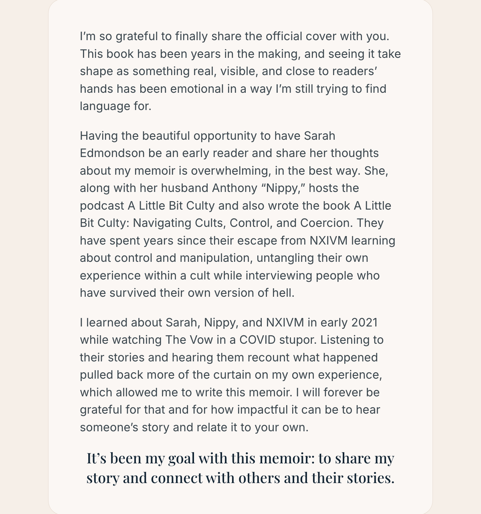

01-header-logo.png
02a-hero-cover-announcement.png

02b-hero-author-note.png
03a-preorder-signed-paperback.png
03b-preorder-kindle-ebook.png
04-excerpt-feature.png
05a-reminder-signed-paperback.png
05b-reminder-kindle-ebook.png
06-closing-note.png
07-footer.png